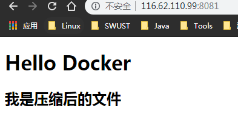
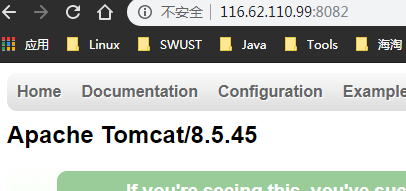

Docker容器
操作Docker容器
容器是 Docker 又一核心概念。
简单的说，容器是独立运行的一个或一组应用，以及它们的运行态环境。对应的，虚拟机可以理解为模拟运行的一整套操作系统（提供了运行态环境和其他系统环境）和跑在上面的应用。
本章将具体介绍如何来管理一个容器，包括创建、启动和停止等。
启动容器
启动容器有两种方式，一种是基于镜像新建一个容器并启动，另外一个是将在终止状态（stopped）的容器重新启动。
因为 Docker 的容器实在太轻量级了，很多时候用户都是随时删除和新创建容器。
新建并启动
所需要的命令主要为 docker run。
例如，下面的命令输出一个 “Hello World”，之后终止容器。
1 | $ docker run ubuntu:14.04 /bin/echo 'Hello world' |
这跟在本地直接执行 /bin/echo ‘hello world’ 几乎感觉不出任何区别。
下面的命令则启动一个 bash 终端，允许用户进行交互。
1 | $ docker run -t -i ubuntu:14.04 /bin/bash |
其中，-t 选项让 Docker 分配一个伪终端（pseudo-tty）并绑定到容器的标准输入上， -i 则让容器的标准输入保持打开。
在交互模式下，用户可以通过所创建的终端来输入命令，例如
1 | root@af8bae53bdd3:/# pwd |
当利用 docker run 来创建容器时，Docker 在后台运行的标准操作包括：
检查本地是否存在指定的镜像，不存在就从公有仓库下载
利用镜像创建并启动一个容器
分配一个文件系统，并在只读的镜像层外面挂载一层可读写层
从宿主主机配置的网桥接口中桥接一个虚拟接口到容器中去
从地址池配置一个 ip 地址给容器
执行用户指定的应用程序
执行完毕后容器被终止
#启动已终止容器
可以利用 docker container start 命令，直接将一个已经终止的容器启动运行。
容器的核心为所执行的应用程序，所需要的资源都是应用程序运行所必需的。除此之外，并没有其它的资源。可以在伪终端中利用 ps 或 top 来查看进程信息。
1 | root@ba267838cc1b:/# ps |
可见，容器中仅运行了指定的 bash 应用。这种特点使得 Docker 对资源的利用率极高，是货真价实的轻量级虚拟化。
守护态运行
更多的时候，需要让 Docker 在后台运行而不是直接把执行命令的结果输出在当前宿主机下
。此时，可以通过添加 -d 参数来实现。避免每次都需要开一个线程进去操作容器
sudo docker run -p 8082:8080 --name mytomcat2 -d tomcat
1 | sudo docker ps |
结果查看:
- 8081
 - 8082

进程
主线程
工作线程
终止进程
终止容器
可以使用 docker container stop 来终止一个运行中的容器。
此外，当 Docker 容器中指定的应用终结时，容器也自动终止。
例如对于上一章节中只启动了一个终端的容器，用户通过 exit 命令或 Ctrl+d 来退出终端时，所创建的容器立刻终止。
终止状态的容器可以用 docker container ls -a 命令看到。例如
1 | docker container ls -a |
处于终止状态的容器，可以通过 docker container start 命令来重新启动。
此外，docker container restart 命令会将一个运行态的容器终止，然后再重新启动它。
进入容器
在使用 -d 参数时，容器启动后会进入后台。
某些时候需要进入容器进行操作，包括使用 docker attach 命令或 docker exec 命令，推荐大家使用 docker exec 命令，原因会在下面说明。
attach 命令
docker attach 是 Docker 自带的命令。下面示例如何使用该命令。
1 | $ docker run -dit ubuntu |
注意： 如果从这个 stdin 中 exit，会导致容器的停止.
exec 命令
#-i -t 参数
docker exec 后边可以跟多个参数，这里主要说明 -i -t 参数。
只用 -i 参数时，由于没有分配伪终端，界面没有我们熟悉的 Linux 命令提示符，但命令执行结果仍然可以返回。
当 -i -t 参数一起使用时，则可以看到我们熟悉的 Linux 命令提示符。
1 | $ docker run -dit ubuntu |
如果从这个 stdin 中 exit，不会导致容器的停止。这就是为什么推荐大家使用 docker exec 的原因。
更多参数说明请使用 docker exec --help 查看。
删除容器
docker rm <容器id>
docker rm $(docker ps -a)删除所有未运行容器
docker container prune 删除所有未运行容器 prune意为修剪